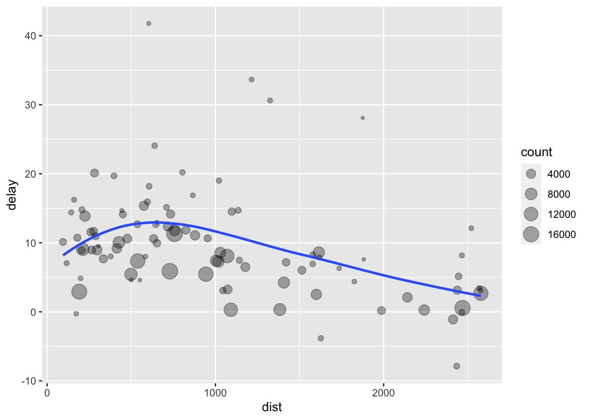
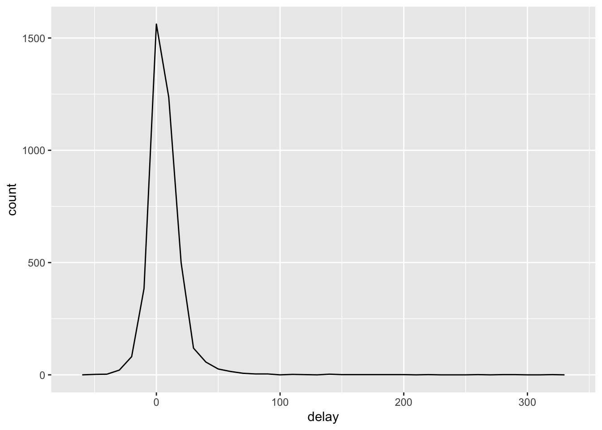
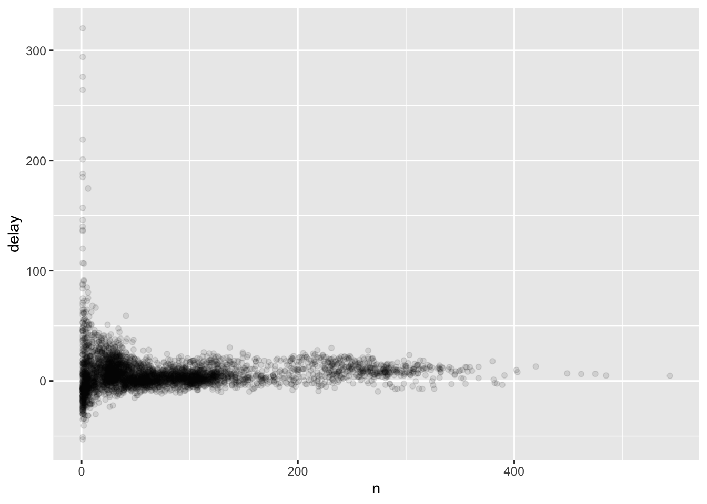
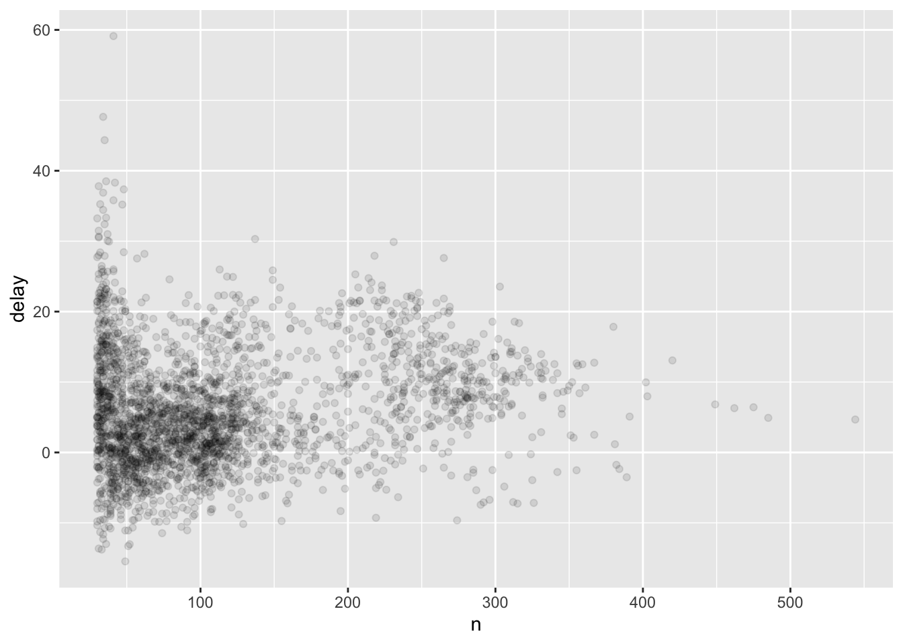
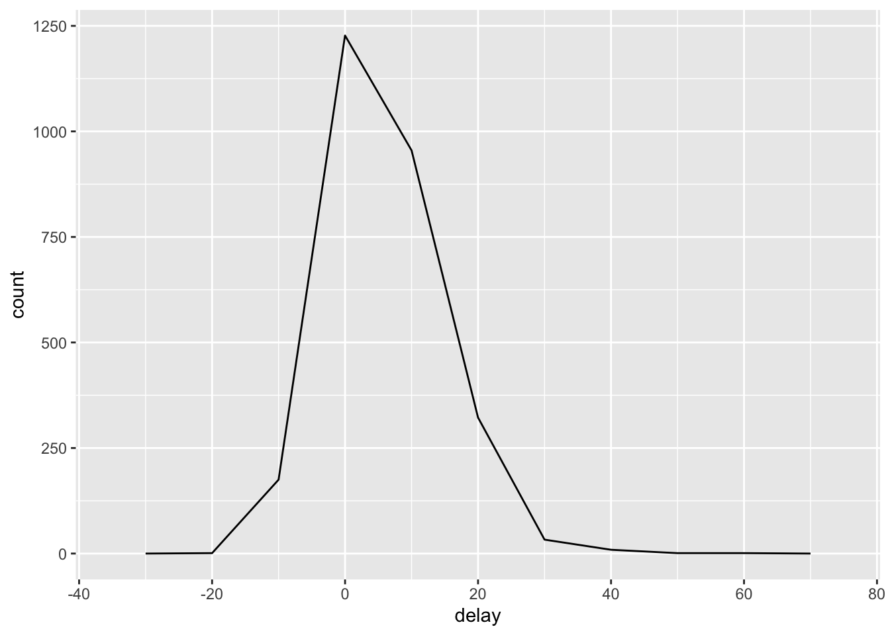

library(tidyverse)Lesson 9: Data Manipulation with dplyr
Review
What did we learn last class?
- Find some raw data
- Reading in flat text / CSV files
- Tibbles and “tidy” data
- Writing flat text / CSV files
- The pipe (
%>%) operator
Overview
In this lesson, we will cover the following:
- Subset Rows with
filter() - Sort Rows with
arrange() - Select and Move Columns with
select() - Create New Columns with
mutate() - Grouping and Group Summaries with
group_by()andsummarise() - Using
*_join()to Merge Tibbles
Common Functions
These functions all operate on tidy data frames:
filter(): return rows that match a certain set of conditionsarrange(): sort rows by a given set of measurementsselect(): select, rename, and / or reorder columnsmutate(): create new columns (often as functions of your existing columns)group_by(): group rows by chosen columnssummarise(): collapse multiple rows into one (often paired withgroup_by()for group summaries)*_join(): match observations from one tibble to observations from another
All of these functions have very similar syntax: function(data_df, ...). The ellipsis will take in the additional conditions or arguments for the function, and column names are passed unquoted. Because these functions all take in the data as their first argument and return the new data set, these functions are often written with the pipe operator we learned last class as data_df %>% function(...). Additionally, these functions do not create new data objects. If you want to keep the transformed data table you’ve created, you must store it as an object.
Important
The dplyr functions do not create new data objects. If you want to keep the transformed data table you’ve created, you must store it as an object.
These functions are all from the dplyr package, which is in the tidyverse. Load it now.
If you get stuck, the dplyr cheat sheet is here: https://www.rstudio.com/wp-content/uploads/2015/02/data-wrangling-cheatsheet.pdf
Example Data
Our example data set has measurements on all flights departing the Greater New York City area in 2013. It has 336,776 unique flights and 19 measurements on those flights. We will use this data set to explore a few of the more commonly-used dplyr functions. Load the nycflights13 package you installed last class:
library(nycflights13)
flights# A tibble: 336,776 × 19
year month day dep_time sched_dep_time dep_delay arr_time sched_arr_time
<int> <int> <int> <int> <int> <dbl> <int> <int>
1 2013 1 1 517 515 2 830 819
2 2013 1 1 533 529 4 850 830
3 2013 1 1 542 540 2 923 850
4 2013 1 1 544 545 -1 1004 1022
5 2013 1 1 554 600 -6 812 837
6 2013 1 1 554 558 -4 740 728
7 2013 1 1 555 600 -5 913 854
8 2013 1 1 557 600 -3 709 723
9 2013 1 1 557 600 -3 838 846
10 2013 1 1 558 600 -2 753 745
# ℹ 336,766 more rows
# ℹ 11 more variables: arr_delay <dbl>, carrier <chr>, flight <int>,
# tailnum <chr>, origin <chr>, dest <chr>, air_time <dbl>, distance <dbl>,
# hour <dbl>, minute <dbl>, time_hour <dttm>Subset Rows with filter()
The filter function takes in the data frame and a logical argument. Rows that return TRUE for that logical argument are returned as a subset of the original data frame. For example, we would like to inspect only flights that happened on 1 January, 2013.
filter(flights, month == 1, day == 1)# A tibble: 842 × 19
year month day dep_time sched_dep_time dep_delay arr_time sched_arr_time
<int> <int> <int> <int> <int> <dbl> <int> <int>
1 2013 1 1 517 515 2 830 819
2 2013 1 1 533 529 4 850 830
3 2013 1 1 542 540 2 923 850
4 2013 1 1 544 545 -1 1004 1022
5 2013 1 1 554 600 -6 812 837
6 2013 1 1 554 558 -4 740 728
7 2013 1 1 555 600 -5 913 854
8 2013 1 1 557 600 -3 709 723
9 2013 1 1 557 600 -3 838 846
10 2013 1 1 558 600 -2 753 745
# ℹ 832 more rows
# ℹ 11 more variables: arr_delay <dbl>, carrier <chr>, flight <int>,
# tailnum <chr>, origin <chr>, dest <chr>, air_time <dbl>, distance <dbl>,
# hour <dbl>, minute <dbl>, time_hour <dttm>This code selects the 842 rows of the flights data frame where the month column is equal to the number 1 (for January) and the day column is also equal to 1. The equivalent code with the pipe operator from last session is almost exactly the same:
flights %>% filter(month == 1, day == 1)# A tibble: 842 × 19
year month day dep_time sched_dep_time dep_delay arr_time sched_arr_time
<int> <int> <int> <int> <int> <dbl> <int> <int>
1 2013 1 1 517 515 2 830 819
2 2013 1 1 533 529 4 850 830
3 2013 1 1 542 540 2 923 850
4 2013 1 1 544 545 -1 1004 1022
5 2013 1 1 554 600 -6 812 837
6 2013 1 1 554 558 -4 740 728
7 2013 1 1 555 600 -5 913 854
8 2013 1 1 557 600 -3 709 723
9 2013 1 1 557 600 -3 838 846
10 2013 1 1 558 600 -2 753 745
# ℹ 832 more rows
# ℹ 11 more variables: arr_delay <dbl>, carrier <chr>, flight <int>,
# tailnum <chr>, origin <chr>, dest <chr>, air_time <dbl>, distance <dbl>,
# hour <dbl>, minute <dbl>, time_hour <dttm>As a review, the pipe turns x %>% f(y) into f(x, y). Pipes allow us to read code from left-to-right and top-to-bottom, rather than inside out with a giant nest of parentheses.
Examples
- Find all the flights on Christmas Eve. We’ll use the same code structure as the code for finding all the New Year’s Day flights.
flights %>% filter(month == 12, day == 24)# A tibble: 761 × 19
year month day dep_time sched_dep_time dep_delay arr_time sched_arr_time
<int> <int> <int> <int> <int> <dbl> <int> <int>
1 2013 12 24 9 2359 10 444 445
2 2013 12 24 458 500 -2 652 651
3 2013 12 24 513 515 -2 813 814
4 2013 12 24 543 540 3 844 850
5 2013 12 24 546 550 -4 1032 1027
6 2013 12 24 555 600 -5 851 915
7 2013 12 24 556 600 -4 845 846
8 2013 12 24 557 600 -3 908 849
9 2013 12 24 558 600 -2 827 831
10 2013 12 24 558 600 -2 729 718
# ℹ 751 more rows
# ℹ 11 more variables: arr_delay <dbl>, carrier <chr>, flight <int>,
# tailnum <chr>, origin <chr>, dest <chr>, air_time <dbl>, distance <dbl>,
# hour <dbl>, minute <dbl>, time_hour <dttm>- Find all flights during the summer months (June, July, and August).
flights %>% filter(month %in% c(6, 7, 8))# A tibble: 86,995 × 19
year month day dep_time sched_dep_time dep_delay arr_time sched_arr_time
<int> <int> <int> <int> <int> <dbl> <int> <int>
1 2013 6 1 2 2359 3 341 350
2 2013 6 1 451 500 -9 624 640
3 2013 6 1 506 515 -9 715 800
4 2013 6 1 534 545 -11 800 829
5 2013 6 1 538 545 -7 925 922
6 2013 6 1 539 540 -1 832 840
7 2013 6 1 546 600 -14 850 910
8 2013 6 1 551 600 -9 828 850
9 2013 6 1 552 600 -8 647 655
10 2013 6 1 553 600 -7 700 711
# ℹ 86,985 more rows
# ℹ 11 more variables: arr_delay <dbl>, carrier <chr>, flight <int>,
# tailnum <chr>, origin <chr>, dest <chr>, air_time <dbl>, distance <dbl>,
# hour <dbl>, minute <dbl>, time_hour <dttm>- Find all flights that did not depart from Newark Liberty.
flights %>% filter(origin != "EWR")# A tibble: 215,941 × 19
year month day dep_time sched_dep_time dep_delay arr_time sched_arr_time
<int> <int> <int> <int> <int> <dbl> <int> <int>
1 2013 1 1 533 529 4 850 830
2 2013 1 1 542 540 2 923 850
3 2013 1 1 544 545 -1 1004 1022
4 2013 1 1 554 600 -6 812 837
5 2013 1 1 557 600 -3 709 723
6 2013 1 1 557 600 -3 838 846
7 2013 1 1 558 600 -2 753 745
8 2013 1 1 558 600 -2 849 851
9 2013 1 1 558 600 -2 853 856
10 2013 1 1 558 600 -2 924 917
# ℹ 215,931 more rows
# ℹ 11 more variables: arr_delay <dbl>, carrier <chr>, flight <int>,
# tailnum <chr>, origin <chr>, dest <chr>, air_time <dbl>, distance <dbl>,
# hour <dbl>, minute <dbl>, time_hour <dttm>- Find all JetBlue (“B6”) or Southwest (“WN”) flights.
flights %>% filter(carrier == "B6" | carrier == "WN")# A tibble: 66,910 × 19
year month day dep_time sched_dep_time dep_delay arr_time sched_arr_time
<int> <int> <int> <int> <int> <dbl> <int> <int>
1 2013 1 1 544 545 -1 1004 1022
2 2013 1 1 555 600 -5 913 854
3 2013 1 1 557 600 -3 838 846
4 2013 1 1 558 600 -2 849 851
5 2013 1 1 558 600 -2 853 856
6 2013 1 1 559 559 0 702 706
7 2013 1 1 600 600 0 851 858
8 2013 1 1 601 600 1 844 850
9 2013 1 1 613 610 3 925 921
10 2013 1 1 615 615 0 1039 1100
# ℹ 66,900 more rows
# ℹ 11 more variables: arr_delay <dbl>, carrier <chr>, flight <int>,
# tailnum <chr>, origin <chr>, dest <chr>, air_time <dbl>, distance <dbl>,
# hour <dbl>, minute <dbl>, time_hour <dttm>- Find any flights out of LaGuardia that actually left on time.
flights %>% filter(origin == "LGA" & dep_delay <= 0)# A tibble: 67,819 × 19
year month day dep_time sched_dep_time dep_delay arr_time sched_arr_time
<int> <int> <int> <int> <int> <dbl> <int> <int>
1 2013 1 1 554 600 -6 812 837
2 2013 1 1 557 600 -3 709 723
3 2013 1 1 558 600 -2 753 745
4 2013 1 1 559 600 -1 941 910
5 2013 1 1 600 600 0 851 858
6 2013 1 1 600 600 0 837 825
7 2013 1 1 602 610 -8 812 820
8 2013 1 1 602 605 -3 821 805
9 2013 1 1 623 627 -4 933 932
10 2013 1 1 624 630 -6 840 830
# ℹ 67,809 more rows
# ℹ 11 more variables: arr_delay <dbl>, carrier <chr>, flight <int>,
# tailnum <chr>, origin <chr>, dest <chr>, air_time <dbl>, distance <dbl>,
# hour <dbl>, minute <dbl>, time_hour <dttm>Sort Rows with arrange()
The arrange() function takes in a data frame and a set of columns to sort on. We can sort the flights by in increasing order by the day of the year: we sort by month, then by day within month.
flights %>% arrange(year, month, day)# A tibble: 336,776 × 19
year month day dep_time sched_dep_time dep_delay arr_time sched_arr_time
<int> <int> <int> <int> <int> <dbl> <int> <int>
1 2013 1 1 517 515 2 830 819
2 2013 1 1 533 529 4 850 830
3 2013 1 1 542 540 2 923 850
4 2013 1 1 544 545 -1 1004 1022
5 2013 1 1 554 600 -6 812 837
6 2013 1 1 554 558 -4 740 728
7 2013 1 1 555 600 -5 913 854
8 2013 1 1 557 600 -3 709 723
9 2013 1 1 557 600 -3 838 846
10 2013 1 1 558 600 -2 753 745
# ℹ 336,766 more rows
# ℹ 11 more variables: arr_delay <dbl>, carrier <chr>, flight <int>,
# tailnum <chr>, origin <chr>, dest <chr>, air_time <dbl>, distance <dbl>,
# hour <dbl>, minute <dbl>, time_hour <dttm>Also, we can sort the flights by departure delay time.
flights %>% arrange(desc(dep_delay))# A tibble: 336,776 × 19
year month day dep_time sched_dep_time dep_delay arr_time sched_arr_time
<int> <int> <int> <int> <int> <dbl> <int> <int>
1 2013 1 9 641 900 1301 1242 1530
2 2013 6 15 1432 1935 1137 1607 2120
3 2013 1 10 1121 1635 1126 1239 1810
4 2013 9 20 1139 1845 1014 1457 2210
5 2013 7 22 845 1600 1005 1044 1815
6 2013 4 10 1100 1900 960 1342 2211
7 2013 3 17 2321 810 911 135 1020
8 2013 6 27 959 1900 899 1236 2226
9 2013 7 22 2257 759 898 121 1026
10 2013 12 5 756 1700 896 1058 2020
# ℹ 336,766 more rows
# ℹ 11 more variables: arr_delay <dbl>, carrier <chr>, flight <int>,
# tailnum <chr>, origin <chr>, dest <chr>, air_time <dbl>, distance <dbl>,
# hour <dbl>, minute <dbl>, time_hour <dttm>Further, we can combine this with the filter() commmand to sort the American Airlines flights out of JFK on the day before Thanksgiving by their duration. By the way, see how easy it is to chain rather complicated commands together? You might begin to imagine that we are only scratching the surface of what we can do with dplyr…
flights %>%
filter(carrier == "AA") %>%
filter(origin == "JFK") %>%
filter(month == 11) %>%
filter(day == 27) %>%
arrange(desc(air_time))# A tibble: 37 × 19
year month day dep_time sched_dep_time dep_delay arr_time sched_arr_time
<int> <int> <int> <int> <int> <dbl> <int> <int>
1 2013 11 27 1529 1530 -1 1903 1915
2 2013 11 27 805 800 5 1129 1135
3 2013 11 27 1740 1745 -5 2103 2125
4 2013 11 27 1022 1030 -8 1319 1355
5 2013 11 27 724 730 -6 1058 1050
6 2013 11 27 1340 1345 -5 1648 1705
7 2013 11 27 1543 1545 -2 1845 1920
8 2013 11 27 1849 1850 -1 2209 2220
9 2013 11 27 1900 1900 0 2229 2215
10 2013 11 27 1141 900 161 1429 1225
# ℹ 27 more rows
# ℹ 11 more variables: arr_delay <dbl>, carrier <chr>, flight <int>,
# tailnum <chr>, origin <chr>, dest <chr>, air_time <dbl>, distance <dbl>,
# hour <dbl>, minute <dbl>, time_hour <dttm>As an aside, look how clean this code looks because of our pipes! Imagine trying to write this as a set of nested functions. Not pretty.
Select and Move Columns with select()
While filter() and arrange() help us select and sort individual observations (rows), the select() function helps us select, rename, or reorder the measurements (columns) of a data frame.
Select Columns that Meet Our Criteria
We first select three columns specifically by their names.
flights %>% select(year, month, day)# A tibble: 336,776 × 3
year month day
<int> <int> <int>
1 2013 1 1
2 2013 1 1
3 2013 1 1
4 2013 1 1
5 2013 1 1
6 2013 1 1
7 2013 1 1
8 2013 1 1
9 2013 1 1
10 2013 1 1
# ℹ 336,766 more rowsNotice that we only have the three columns we explicitly requested by name and no more. The select() function will drop whatever we don’t ask for by default, but we can change this behaviour by adding the additional everything() argument (we’ll come back to this in the “reordering columns” section).
We could have also specified a range of column names to achieve the same effect.
flights %>% select(year:day)# A tibble: 336,776 × 3
year month day
<int> <int> <int>
1 2013 1 1
2 2013 1 1
3 2013 1 1
4 2013 1 1
5 2013 1 1
6 2013 1 1
7 2013 1 1
8 2013 1 1
9 2013 1 1
10 2013 1 1
# ℹ 336,766 more rowsIf you have used regular expressions or performed string manipulation before, you can also use the following modifiers to the select() function:
- Find all the columns with names starting with “dep_”.
flights %>% select(starts_with("dep_"))# A tibble: 336,776 × 2
dep_time dep_delay
<int> <dbl>
1 517 2
2 533 4
3 542 2
4 544 -1
5 554 -6
6 554 -4
7 555 -5
8 557 -3
9 557 -3
10 558 -2
# ℹ 336,766 more rows- Find all the columns with names ending with “ay”.
flights %>% select(ends_with("ay"))# A tibble: 336,776 × 3
day dep_delay arr_delay
<int> <dbl> <dbl>
1 1 2 11
2 1 4 20
3 1 2 33
4 1 -1 -18
5 1 -6 -25
6 1 -4 12
7 1 -5 19
8 1 -3 -14
9 1 -3 -8
10 1 -2 8
# ℹ 336,766 more rows- Find all the columns with names that contain “time”.
flights %>% select(contains("time"))# A tibble: 336,776 × 6
dep_time sched_dep_time arr_time sched_arr_time air_time time_hour
<int> <int> <int> <int> <dbl> <dttm>
1 517 515 830 819 227 2013-01-01 05:00:00
2 533 529 850 830 227 2013-01-01 05:00:00
3 542 540 923 850 160 2013-01-01 05:00:00
4 544 545 1004 1022 183 2013-01-01 05:00:00
5 554 600 812 837 116 2013-01-01 06:00:00
6 554 558 740 728 150 2013-01-01 05:00:00
7 555 600 913 854 158 2013-01-01 06:00:00
8 557 600 709 723 53 2013-01-01 06:00:00
9 557 600 838 846 140 2013-01-01 06:00:00
10 558 600 753 745 138 2013-01-01 06:00:00
# ℹ 336,766 more rows- Find all the columns with names that start with exactly three lower case letters followed by “_“.
flights %>% select(matches("^[a-z]{3}\\_"))# A tibble: 336,776 × 5
dep_time dep_delay arr_time arr_delay air_time
<int> <dbl> <int> <dbl> <dbl>
1 517 2 830 11 227
2 533 4 850 20 227
3 542 2 923 33 160
4 544 -1 1004 -18 183
5 554 -6 812 -25 116
6 554 -4 740 12 150
7 555 -5 913 19 158
8 557 -3 709 -14 53
9 557 -3 838 -8 140
10 558 -2 753 8 138
# ℹ 336,766 more rowsThe matches() function takes in a regular expression. If you have never used regular expressions for string queries before, don’t be afraid. You can do most of the things you need without ever touching the matches() function. However, if you do find yourself needing some help with string manipulation in R, please see the stringr package cheat sheet from the RStudio Cheat Sheets page and the strings chapter from R for Data Science. You can also practice building expressions on https://regexr.com/.
Remove, Reorder, or Rename
Remove Columns
We can also use “negative indexing” to select all the columns except for the columns we named.
flights %>% select(-(year:day))# A tibble: 336,776 × 16
dep_time sched_dep_time dep_delay arr_time sched_arr_time arr_delay carrier
<int> <int> <dbl> <int> <int> <dbl> <chr>
1 517 515 2 830 819 11 UA
2 533 529 4 850 830 20 UA
3 542 540 2 923 850 33 AA
4 544 545 -1 1004 1022 -18 B6
5 554 600 -6 812 837 -25 DL
6 554 558 -4 740 728 12 UA
7 555 600 -5 913 854 19 B6
8 557 600 -3 709 723 -14 EV
9 557 600 -3 838 846 -8 B6
10 558 600 -2 753 745 8 AA
# ℹ 336,766 more rows
# ℹ 9 more variables: flight <int>, tailnum <chr>, origin <chr>, dest <chr>,
# air_time <dbl>, distance <dbl>, hour <dbl>, minute <dbl>, time_hour <dttm>This is particularly useful when we have filtered out all of one type of observation. We can then remove the redundant column information. For instance, previously we filtered only the flights leaving on 1 January, 2013. However, we still had the year, month, and day columns in this data table, even though this information was superfluous after filtering.
# Before
flights %>%
filter(month == 1, day == 1)# A tibble: 842 × 19
year month day dep_time sched_dep_time dep_delay arr_time sched_arr_time
<int> <int> <int> <int> <int> <dbl> <int> <int>
1 2013 1 1 517 515 2 830 819
2 2013 1 1 533 529 4 850 830
3 2013 1 1 542 540 2 923 850
4 2013 1 1 544 545 -1 1004 1022
5 2013 1 1 554 600 -6 812 837
6 2013 1 1 554 558 -4 740 728
7 2013 1 1 555 600 -5 913 854
8 2013 1 1 557 600 -3 709 723
9 2013 1 1 557 600 -3 838 846
10 2013 1 1 558 600 -2 753 745
# ℹ 832 more rows
# ℹ 11 more variables: arr_delay <dbl>, carrier <chr>, flight <int>,
# tailnum <chr>, origin <chr>, dest <chr>, air_time <dbl>, distance <dbl>,
# hour <dbl>, minute <dbl>, time_hour <dttm># After
flights %>%
filter(month == 1, day == 1) %>%
select(-year, -month, -day)# A tibble: 842 × 16
dep_time sched_dep_time dep_delay arr_time sched_arr_time arr_delay carrier
<int> <int> <dbl> <int> <int> <dbl> <chr>
1 517 515 2 830 819 11 UA
2 533 529 4 850 830 20 UA
3 542 540 2 923 850 33 AA
4 544 545 -1 1004 1022 -18 B6
5 554 600 -6 812 837 -25 DL
6 554 558 -4 740 728 12 UA
7 555 600 -5 913 854 19 B6
8 557 600 -3 709 723 -14 EV
9 557 600 -3 838 846 -8 B6
10 558 600 -2 753 745 8 AA
# ℹ 832 more rows
# ℹ 9 more variables: flight <int>, tailnum <chr>, origin <chr>, dest <chr>,
# air_time <dbl>, distance <dbl>, hour <dbl>, minute <dbl>, time_hour <dttm>Reorder Columns
As we alluded to above, we can also use the select() function to change the order of the columns of the data table, without removing the columns we don’t explicitely name, with the helpof the everything() function.
flights %>% select(time_hour, air_time, everything())# A tibble: 336,776 × 19
time_hour air_time year month day dep_time sched_dep_time
<dttm> <dbl> <int> <int> <int> <int> <int>
1 2013-01-01 05:00:00 227 2013 1 1 517 515
2 2013-01-01 05:00:00 227 2013 1 1 533 529
3 2013-01-01 05:00:00 160 2013 1 1 542 540
4 2013-01-01 05:00:00 183 2013 1 1 544 545
5 2013-01-01 06:00:00 116 2013 1 1 554 600
6 2013-01-01 05:00:00 150 2013 1 1 554 558
7 2013-01-01 06:00:00 158 2013 1 1 555 600
8 2013-01-01 06:00:00 53 2013 1 1 557 600
9 2013-01-01 06:00:00 140 2013 1 1 557 600
10 2013-01-01 06:00:00 138 2013 1 1 558 600
# ℹ 336,766 more rows
# ℹ 12 more variables: dep_delay <dbl>, arr_time <int>, sched_arr_time <int>,
# arr_delay <dbl>, carrier <chr>, flight <int>, tailnum <chr>, origin <chr>,
# dest <chr>, distance <dbl>, hour <dbl>, minute <dbl>Rename Columns
While the select() function can rename columns, we recommend using the rename() function for better readibility of your code instead. This function takes in the data table and an argument that follows the [new name] = [old name] syntax. For example, we notice that all of the column names with more than one word are written in snake_case except for tailnum. We can rename this column to match our naming convention. However, we must save the results of the output of the rename() function. Otherwise, the data table with the new column name will print to the screen but never be saved anywhere. We can use the names() function to check that our new name stuck.
flights <- rename(flights, tail_num = tailnum)
names(flights) [1] "year" "month" "day" "dep_time"
[5] "sched_dep_time" "dep_delay" "arr_time" "sched_arr_time"
[9] "arr_delay" "carrier" "flight" "tail_num"
[13] "origin" "dest" "air_time" "distance"
[17] "hour" "minute" "time_hour" Create New Columns with mutate()
Up to this point, we have only teased out observational or measurement information that was already in the data table. But what if we want to create a new measurement as a function of some existing measurements? We can do so with the mutate() function. This function’s syntax is very similar to the syntax of the rename() function: the data frame is first, then [new column name] = {expression}.
For example, we will find all the continental US flights with the strongest potential jet stream delay (the West Coast airports). We would like to find the land speed of each of these flights and add it to our smaller data table.
westCoast <- c(
"BUR", "HNL", "LAS", "LAX", "OAK", "PDX", "PHX", "PSP", "RNO", "SAN", "SEA",
"SFO", "SJC", "SLC"
)
jetStreamFlights <- flights %>%
filter(dest %in% westCoast) %>%
select(month, day, dest, ends_with("delay"), distance, air_time)
jetStreamFlights %>%
mutate(speed_mph = distance / (air_time / 60))# A tibble: 52,377 × 8
month day dest dep_delay arr_delay distance air_time speed_mph
<int> <int> <chr> <dbl> <dbl> <dbl> <dbl> <dbl>
1 1 1 LAX -2 7 2475 345 430.
2 1 1 SFO -2 -14 2565 361 426.
3 1 1 LAS -1 -8 2227 337 396.
4 1 1 SFO 11 14 2586 366 424.
5 1 1 PHX -8 3 2133 342 374.
6 1 1 PHX -3 0 2153 330 391.
7 1 1 LAX -2 29 2454 366 402.
8 1 1 LAS -4 -6 2248 323 418.
9 1 1 SLC 0 -9 1990 294 406.
10 1 1 SFO -5 -8 2586 362 429.
# ℹ 52,367 more rowsIf we only care about the speeds themselves, we can select the speed_mph column we just created.
jetStreamFlights %>%
mutate(speed_mph = distance / (air_time / 60)) %>%
select(speed_mph)# A tibble: 52,377 × 1
speed_mph
<dbl>
1 430.
2 426.
3 396.
4 424.
5 374.
6 391.
7 402.
8 418.
9 406.
10 429.
# ℹ 52,367 more rowsAlternatively, we could use mutate()’s “cousin”, the transmute() function. This function is shorthand for mutate then select.
jetStreamFlights %>%
transmute(speed_mph = distance / (air_time / 60))# A tibble: 52,377 × 1
speed_mph
<dbl>
1 430.
2 426.
3 396.
4 424.
5 374.
6 391.
7 402.
8 418.
9 406.
10 429.
# ℹ 52,367 more rowsThe case_when() Function
We can use the mutate() in conjunction with the case_when() function to add a label indicating if the flight has beverage service, meals for sale, or meals included. In order to use the case_when() function, we need to map out all of the meal options and the flight durations that trigger them. This will take the form of a giant IF-THEN ladder:
- IF
air_time <= 50THEN no beverage service or snacks - IF
50 < air_timeANDair_time <= 2.5 * 60THEN beverage and snacks - IF
2.5 * 60 < air_timeANDair_time <= 4 * 60THEN beverage and snacks with meals for sale - IF
4 * 60 < air_timeANDair_time <= 7 * 60THEN beverage, snacks, and 1 meal - IF
7 * 60 < air_timeTHEN beverage, snacks, and 2 meals
The syntax to use the case_when() function is:
- the IF statement is automatically included
- AND and OR use R’s regular functions:
&,| - THEN is the tilde symbol,
~.
Thus, the code to add flight food labels is:
flights %>%
mutate(
food = case_when(
air_time <= 50 ~
"none",
50 < air_time & air_time <= 2.5 * 60 ~
"drinks + light snacks",
2.5 * 60 < air_time & air_time <= 4 * 60 ~
"drinks + heavy snacks",
4 * 60 < air_time & air_time <= 7 * 60 ~
"drinks, snacks, and 1 meal",
7 * 60 < air_time ~
"drinks, snacks, and 2 meals"
)
) %>%
select(air_time, food)# A tibble: 336,776 × 2
air_time food
<dbl> <chr>
1 227 drinks + heavy snacks
2 227 drinks + heavy snacks
3 160 drinks + heavy snacks
4 183 drinks + heavy snacks
5 116 drinks + light snacks
6 150 drinks + light snacks
7 158 drinks + heavy snacks
8 53 drinks + light snacks
9 140 drinks + light snacks
10 138 drinks + light snacks
# ℹ 336,766 more rowsThe code pieces on the left and right of the tilde are called expressions, and they are used to construct functions. The mutate() function can also make use of functions you construct. We will discuss this more in the lesson on control flow and functions.
Examples
The possible uses of the mutate() function are practically endless, but we can look a few examples.
Basic Arithmetic
We may not be concerned with the actual distance of a flight, but perhaps its difference from the average flight distance.
flights %>%
transmute(residual_dist = distance - mean(distance))# A tibble: 336,776 × 1
residual_dist
<dbl>
1 360.
2 376.
3 49.1
4 536.
5 -278.
6 -321.
7 25.1
8 -811.
9 -95.9
10 -307.
# ℹ 336,766 more rowsPerhaps we want to add an indicator for “long flights” (American Airlines considers a long flight any flight over four-and-a-half hours) and then order these flights by flight time, excluding flights to Honolulu.
flights %>%
mutate(long_flight = air_time >= 270) %>%
filter(dest != "HNL") %>%
select(dest, long_flight, air_time, everything()) %>%
arrange(desc(air_time))# A tibble: 336,069 × 20
dest long_flight air_time year month day dep_time sched_dep_time
<chr> <lgl> <dbl> <int> <int> <int> <int> <int>
1 SFO TRUE 490 2013 7 28 1727 1730
2 LAX TRUE 440 2013 11 22 1812 1815
3 SFO TRUE 438 2013 12 6 1727 1730
4 ANC TRUE 434 2013 8 3 1615 1615
5 ANC TRUE 428 2013 8 24 1633 1625
6 SFO TRUE 426 2013 12 6 1746 1745
7 SFO TRUE 422 2013 2 4 747 745
8 LAX TRUE 422 2013 7 10 1814 1815
9 SFO TRUE 421 2013 8 8 1724 1710
10 SFO TRUE 420 2013 8 8 1819 1519
# ℹ 336,059 more rows
# ℹ 12 more variables: dep_delay <dbl>, arr_time <int>, sched_arr_time <int>,
# arr_delay <dbl>, carrier <chr>, flight <int>, tail_num <chr>, origin <chr>,
# distance <dbl>, hour <dbl>, minute <dbl>, time_hour <dttm>Time and Modular Arithmetic (Optional)
The departure and arrival times are presented in a readable form of hours as the first two digits and and minutes as the last two (for example, 5:17AM is 517). However, we can’t subtract arrival time from departure time because these times are not proper continuous variables. We can create two new columns which measure the number of minutes after midnight for both departure and arrival (using modular arithmetic). We will then move these columns to the front so we can see them.
flights %>%
mutate(
dep_time_min = (dep_time %/% 100) * 60 + dep_time %% 100,
arr_time_min = (arr_time %/% 100) * 60 + arr_time %% 100
) %>%
select(starts_with("dep_time"), starts_with("arr_time"), everything())# A tibble: 336,776 × 21
dep_time dep_time_min arr_time arr_time_min year month day sched_dep_time
<int> <dbl> <int> <dbl> <int> <int> <int> <int>
1 517 317 830 510 2013 1 1 515
2 533 333 850 530 2013 1 1 529
3 542 342 923 563 2013 1 1 540
4 544 344 1004 604 2013 1 1 545
5 554 354 812 492 2013 1 1 600
6 554 354 740 460 2013 1 1 558
7 555 355 913 553 2013 1 1 600
8 557 357 709 429 2013 1 1 600
9 557 357 838 518 2013 1 1 600
10 558 358 753 473 2013 1 1 600
# ℹ 336,766 more rows
# ℹ 13 more variables: dep_delay <dbl>, sched_arr_time <int>, arr_delay <dbl>,
# carrier <chr>, flight <int>, tail_num <chr>, origin <chr>, dest <chr>,
# air_time <dbl>, distance <dbl>, hour <dbl>, minute <dbl>, time_hour <dttm>The %% operator is the modulo operator (sometimes called the “remainder” operator) in R. The a %% b operation returns the remainder after dividing a by b. The %/% operator is the integer division operator; the a %/% b operation returns the quotient of a and b with any decimal information discarded.
Grouping and Group Summaries with group_by() and summarise()
The summarise() function is very powerful and very flexible. We will not have time to discuss all it can do. For a more complete discussion, see the summarise() section of R for Data Science, chapter 5.
The syntax of summarise() is similar to the mutate() syntax. We can find the average delay of all flights leaving the New York City area in 2013. Because NAs are contagious, we remove them from the calculation with na.rm = TRUE.
flights %>% summarise(delay = mean(dep_delay, na.rm = TRUE))# A tibble: 1 × 1
delay
<dbl>
1 12.6Incidentally, the NAs are from cancelled flights. We can remove the cancelled flights and save this data set.
not_cancelled <- flights %>%
filter(!is.na(dep_delay)) %>%
filter(!is.na(arr_delay))We can also find the arrival delay by destination with group_by(), then check if any cites seem to have less arrival delays (possibly due to changes in wind resistance).
not_cancelled %>%
group_by(dest) %>%
summarise(delay = mean(arr_delay)) %>%
mutate(resid_delay = delay - mean(delay)) %>%
arrange(resid_delay)# A tibble: 104 × 3
dest delay resid_delay
<chr> <dbl> <dbl>
1 LEX -22 -30.7
2 PSP -12.7 -21.5
3 SNA -7.87 -16.6
4 STT -3.84 -12.6
5 ANC -2.5 -11.2
6 HNL -1.37 -10.1
7 SEA -1.10 -9.83
8 MVY -0.286 -9.02
9 LGB -0.0620 -8.79
10 SLC 0.176 -8.56
# ℹ 94 more rowsWe can always ungroup our data table with the ungroup() function.
Chaining Operations Together
We have already used the pipe (%>%) operator quite a bit. This allows us to chain multiple steps together. For example, we might want to plot the relationship between flight distance and arrival delay (if you don’t remember how to use ggplot(), take a look at the Review section).
# Create a "delays" data table
delays <- flights %>%
group_by(dest) %>%
summarise(
count = n(),
dist = mean(distance, na.rm = TRUE),
delay = mean(arr_delay, na.rm = TRUE)
) %>%
# We don't want any small airports, or Honolulu
filter(count > 20, dest != "HNL")
# Plot the delays and add a smoother
ggplot(data = delays) +
aes(x = dist, y = delay) +
geom_point(aes(size = count), alpha = 1/3) +
geom_smooth(se = FALSE)`geom_smooth()` using method = 'loess' and formula = 'y ~ x'
Adding and Visualising Counts
Let’s look at the average delay by plane. Based on this graph, there are some planes with an average delay of over five hours! But how many flights did that plane make? We need to add a count.
delays <- not_cancelled %>%
group_by(tail_num) %>%
summarise(
delay = mean(arr_delay)
)
ggplot(data = delays) +
aes(x = delay) +
geom_freqpoly(binwidth = 10)
Now that we add a count and re-plot the average arrival delay, we immediately see the Central Limit Theorem in action. All those planes with massive average delays only had one or two flights.
delays <- not_cancelled %>%
group_by(tail_num) %>%
summarise(
delay = mean(arr_delay, na.rm = TRUE),
n = n()
)
ggplot(data = delays) +
aes(x = n, y = delay) +
geom_point(alpha = 1/10)
We can remove any planes with fewer than 30 flights and re-visualize the relationships between average delay and number of flights and the overall count-delay distribution.
delays %>%
filter(n >= 30) %>%
ggplot() +
aes(x = n, y = delay) +
geom_point(alpha = 1/10)
delays %>%
filter(n >= 30) %>%
ggplot() +
aes(x = delay) +
geom_freqpoly(binwidth = 10)
Other Useful Summaries
We know that passengers don’t usually complain if their flight is early, but our dep_delay has negative values for flights which left early. We can find the average true “delay” by taking the summary of only the positive delay values.
not_cancelled %>%
group_by(year, month, day) %>%
summarise(
avg_delay1 = mean(arr_delay),
# the average positive delay
avg_delay2 = mean(arr_delay[arr_delay > 0])
)`summarise()` has grouped output by 'year', 'month'. You can override using the
`.groups` argument.# A tibble: 365 × 5
# Groups: year, month [12]
year month day avg_delay1 avg_delay2
<int> <int> <int> <dbl> <dbl>
1 2013 1 1 12.7 32.5
2 2013 1 2 12.7 32.0
3 2013 1 3 5.73 27.7
4 2013 1 4 -1.93 28.3
5 2013 1 5 -1.53 22.6
6 2013 1 6 4.24 24.4
7 2013 1 7 -4.95 27.8
8 2013 1 8 -3.23 20.8
9 2013 1 9 -0.264 25.6
10 2013 1 10 -5.90 27.3
# ℹ 355 more rowsExamples
- We can find the proportion of flights by day that are delayed longer than 1 hour.
not_cancelled %>%
group_by(year, month, day) %>%
summarise(hour_perc = mean(arr_delay > 60))`summarise()` has grouped output by 'year', 'month'. You can override using the
`.groups` argument.# A tibble: 365 × 4
# Groups: year, month [12]
year month day hour_perc
<int> <int> <int> <dbl>
1 2013 1 1 0.0722
2 2013 1 2 0.0851
3 2013 1 3 0.0567
4 2013 1 4 0.0396
5 2013 1 5 0.0349
6 2013 1 6 0.0470
7 2013 1 7 0.0333
8 2013 1 8 0.0213
9 2013 1 9 0.0202
10 2013 1 10 0.0183
# ℹ 355 more rows- We can also measure parametric and non-parametric spread or variability.
not_cancelled %>%
group_by(dest) %>%
summarise(distance_sd = sd(distance)) %>%
arrange(desc(distance_sd))# A tibble: 104 × 2
dest distance_sd
<chr> <dbl>
1 EGE 10.5
2 SAN 10.4
3 SFO 10.2
4 HNL 10.0
5 SEA 9.98
6 LAS 9.91
7 PDX 9.87
8 PHX 9.86
9 LAX 9.66
10 IND 9.46
# ℹ 94 more rowsnot_cancelled %>%
group_by(year, month, day) %>%
summarise(
first = min(dep_time),
p25 = quantile(dep_time, 0.25),
last = max(dep_time)
)`summarise()` has grouped output by 'year', 'month'. You can override using the
`.groups` argument.# A tibble: 365 × 6
# Groups: year, month [12]
year month day first p25 last
<int> <int> <int> <int> <dbl> <int>
1 2013 1 1 517 938. 2356
2 2013 1 2 42 912. 2354
3 2013 1 3 32 909 2349
4 2013 1 4 25 901. 2358
5 2013 1 5 14 859 2357
6 2013 1 6 16 1003 2355
7 2013 1 7 49 907. 2359
8 2013 1 8 454 858 2351
9 2013 1 9 2 858 2252
10 2013 1 10 3 859 2320
# ℹ 355 more rows- Because counting by groups is so common, we can use the shorthand
count()function.
# Instead of
not_cancelled %>%
group_by(dest) %>%
summarise(n = n())# A tibble: 104 × 2
dest n
<chr> <int>
1 ABQ 254
2 ACK 264
3 ALB 418
4 ANC 8
5 ATL 16837
6 AUS 2411
7 AVL 261
8 BDL 412
9 BGR 358
10 BHM 269
# ℹ 94 more rows# use
not_cancelled %>%
count(dest)# A tibble: 104 × 2
dest n
<chr> <int>
1 ABQ 254
2 ACK 264
3 ALB 418
4 ANC 8
5 ATL 16837
6 AUS 2411
7 AVL 261
8 BDL 412
9 BGR 358
10 BHM 269
# ℹ 94 more rows- The
count()function can take in weights as well. We can use this to find the planes that logged the most air miles in 2013.
not_cancelled %>%
count(tail_num, wt = distance) %>%
arrange(desc(n))# A tibble: 4,037 × 2
tail_num n
<chr> <dbl>
1 N328AA 929090
2 N338AA 921172
3 N335AA 902271
4 N327AA 900482
5 N323AA 839468
6 N319AA 837924
7 N336AA 833136
8 N329AA 825826
9 N324AA 786159
10 N339AA 783648
# ℹ 4,027 more rowsGrouping by Multiple Variables
We can group on the year, month within year, and day within month. Then, we can “roll up” the data summaries.
(
per_day <- flights %>%
group_by(year, month, day) %>%
summarise(flights = n())
)`summarise()` has grouped output by 'year', 'month'. You can override using the
`.groups` argument.# A tibble: 365 × 4
# Groups: year, month [12]
year month day flights
<int> <int> <int> <int>
1 2013 1 1 842
2 2013 1 2 943
3 2013 1 3 914
4 2013 1 4 915
5 2013 1 5 720
6 2013 1 6 832
7 2013 1 7 933
8 2013 1 8 899
9 2013 1 9 902
10 2013 1 10 932
# ℹ 355 more rows(
per_month <- per_day %>%
summarise(flights = sum(flights))
)`summarise()` has grouped output by 'year'. You can override using the
`.groups` argument.# A tibble: 12 × 3
# Groups: year [1]
year month flights
<int> <int> <int>
1 2013 1 27004
2 2013 2 24951
3 2013 3 28834
4 2013 4 28330
5 2013 5 28796
6 2013 6 28243
7 2013 7 29425
8 2013 8 29327
9 2013 9 27574
10 2013 10 28889
11 2013 11 27268
12 2013 12 28135(
per_year <- per_month %>%
summarise(flights = sum(flights))
)# A tibble: 1 × 2
year flights
<int> <int>
1 2013 336776Using *_join() to Merge Tibbles
If you have two or more tables which share one or more columns, then you can join these tables using the *_join() family of functions. For two data tables A and B with a shared column named "x", these functions are
left_join(A, B, by = "x"): join matching rows fromBtoA. Missing rows inBwill be padded withNA.right_join(A, B, by = "x"): join matching rows fromAtoB. Missing rows inAwill be padded withNA.inner_join(A, B, by = "x"): join rows only in bothAandB. There will be no missing rows.full_join(A, B, by = "x"): join all rows inAandB. Missing rows inAandBwill be padded withNA.semi_join(A, B, by = "x"): retain rows inAwhich have a match inB.anti_join(A, B, by = "x"): retain rows inAwhich do not have a match inB.
Carrier Name Data
Take a look at the names of the airlines in the flights data set (the unique() function does what you think it does)
flights %>%
select(carrier) %>%
unique()# A tibble: 16 × 1
carrier
<chr>
1 UA
2 AA
3 B6
4 DL
5 EV
6 MQ
7 US
8 WN
9 VX
10 FL
11 AS
12 9E
13 F9
14 HA
15 YV
16 OO Some of these abbreviations I know, but not all of them. However, in the nycflights13 package, there is another data set that matches the airline abbreviation with its full company name (I found this data set by looking at the help file for the flights object):
airlines# A tibble: 16 × 2
carrier name
<chr> <chr>
1 9E Endeavor Air Inc.
2 AA American Airlines Inc.
3 AS Alaska Airlines Inc.
4 B6 JetBlue Airways
5 DL Delta Air Lines Inc.
6 EV ExpressJet Airlines Inc.
7 F9 Frontier Airlines Inc.
8 FL AirTran Airways Corporation
9 HA Hawaiian Airlines Inc.
10 MQ Envoy Air
11 OO SkyWest Airlines Inc.
12 UA United Air Lines Inc.
13 US US Airways Inc.
14 VX Virgin America
15 WN Southwest Airlines Co.
16 YV Mesa Airlines Inc. Airline with the Fewest Delays
We want to find the airlines and airports to fly out of NYC on that will get us to our destination on time.
mean_arr_delay_df <-
not_cancelled %>%
group_by(carrier, origin) %>%
summarise(mean_arr_delay = mean(arr_delay)) %>%
arrange(mean_arr_delay)`summarise()` has grouped output by 'carrier'. You can override using the
`.groups` argument.mean_arr_delay_df# A tibble: 35 × 3
# Groups: carrier [16]
carrier origin mean_arr_delay
<chr> <chr> <dbl>
1 AS EWR -9.93
2 HA JFK -6.92
3 DL JFK -2.38
4 AA LGA -1.33
5 VX EWR -0.677
6 US EWR 0.977
7 AA EWR 0.978
8 9E EWR 1.62
9 9E LGA 1.77
10 AA JFK 2.08
# ℹ 25 more rowsNow, we can join this tibble to the airlines tibble. Which join will we use? We want to keep all the rows from this mean arrival delay tibble, and match the rows from the airlines tibble to it. We will use the left_join() function, with mean_arr_delay_df as the left table and airlines as the right:
left_join(mean_arr_delay_df, airlines)Joining with `by = join_by(carrier)`# A tibble: 35 × 4
# Groups: carrier [16]
carrier origin mean_arr_delay name
<chr> <chr> <dbl> <chr>
1 AS EWR -9.93 Alaska Airlines Inc.
2 HA JFK -6.92 Hawaiian Airlines Inc.
3 DL JFK -2.38 Delta Air Lines Inc.
4 AA LGA -1.33 American Airlines Inc.
5 VX EWR -0.677 Virgin America
6 US EWR 0.977 US Airways Inc.
7 AA EWR 0.978 American Airlines Inc.
8 9E EWR 1.62 Endeavor Air Inc.
9 9E LGA 1.77 Endeavor Air Inc.
10 AA JFK 2.08 American Airlines Inc.
# ℹ 25 more rowsWe will spend a bit more time on joins when we are working with the ACS SNAP data (remember that we have one data set with all the ZIP codes for Miami-Dade and Broward and a different data set with all the SNAP recipients for the whole state). However, we still need to learn how to work with data in character strings first, so we will be back to these data after the stringr:: lesson.
Exercise
Find the airports and airlines that have the lowest average arrival delay to Miami.